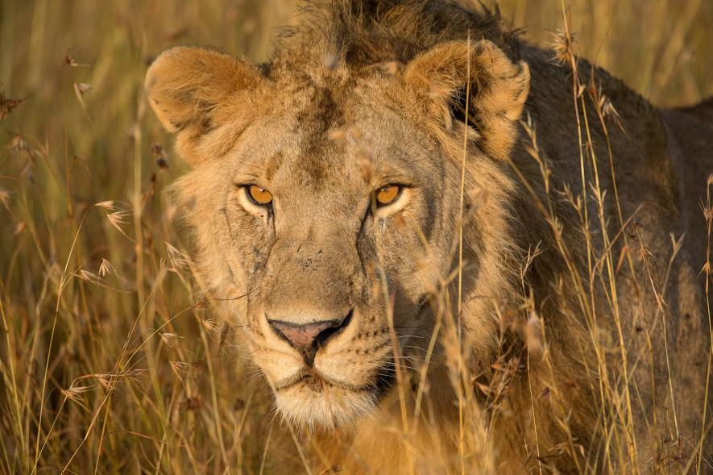

The Animal Kingdom

Animals (also referred to as metazoa) are multicellular eukaryotic
organisms that form the biological kingdom Animalia.
Animal Classification
In order for us to understand how all living organisms are related,
they are arranged into different groups. The more features that a
group of animals share, the more specific the group is.
Kingdom
All living organisms are first placed into different kingdoms. There
are five different kingdoms to classify life on Earth, which are
Animals, Plants, Fungi, Bacteria, and Protists (single-celled
organisms).
Phylum
The animal kingdom is divided into 40 smaller groups, known as phylum.
Here, animals are grouped by their main features.
Class
The phylum group is then divided into even smaller groups, known as
classes.
Order
Each class is divided into small groups again, known as orders. The
class Mammalia (Mammals), splits into different groups including
Carnivora, Primate, Artiodactyla and Rodentia.
Family
In every order, there are different families of animals which all have
very similar features. The Carnivora order breaks into families that
include Felidae (Cats), Canidae (Dogs), Ursidae (Bears), and
Mustelidae (Weasels).
Genus
Every animal family is then divided into small groups known as genus.
Each genus contains animals that have very similar features and are
closely related.
Species
Each individual species within the genus is named after it's
individual features and characteristics.